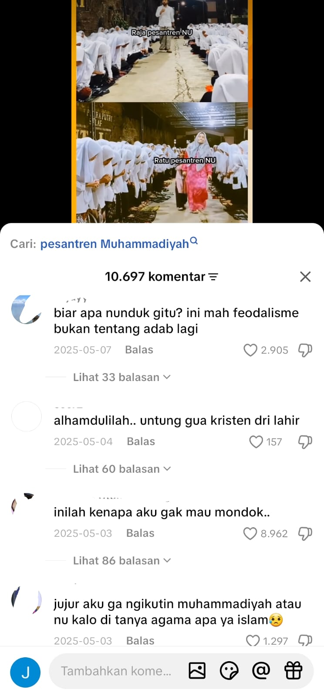

Studi Kasus Ujaran Kebencian di Media Sosial
Manusia merupakan makhluk ciptaan Tuhan yang memiliki akal dan hati nurani. Dengan kemampuan tersebut, manusia dapat berpikir serta mengambil keputusan dalam kehidupan sehari-hari. Namun, perkembangan teknologi di era digital saat ini membawa tantangan baru, salah satunya adalah munculnya ujaran kebencian di media sosial.
QS. Al-Hujurat: 11
يٰۤاَيُّهَا الَّذِيۡنَ اٰمَنُوۡا لَا يَسۡخَرۡ قَوۡمٌ مِّنۡ قَوۡمٍ عَسٰٓى اَنۡ يَّكُوۡنُوۡا خَيۡرًا مِّنۡهُمۡ وَلَا نِسَآءٌ مِّنۡ نِّسَآءٍ عَسٰٓى اَنۡ يَّكُنَّ خَيۡرًا مِّنۡهُنَّۚ وَلَا تَلۡمِزُوۡۤا اَنۡفُسَكُمۡ وَلَا تَنَابَزُوۡا بِالۡاَلۡقَابِؕ بِئۡسَ الِاسۡمُ الۡفُسُوۡقُ بَعۡدَ الۡاِيۡمَانِ ۚ وَمَنۡ لَّمۡ يَتُبۡ فَاُولٰٓٮِٕكَ هُمُ الظّٰلِمُوۡنَ"Wahai orang-orang yang beriman! Janganlah suatu kaum mengolok-olok kaum yang lain..."
Larangan menghina dan merendahkan orang lain.
QS. Al-Hujurat: 12
يٰۤـاَيُّهَا الَّذِيۡنَ اٰمَنُوا اجۡتَنِبُوۡا كَثِيۡرًا مِّنَ الظَّنِّ اِنَّ بَعۡضَ الظَّنِّ اِثۡمٌ وَّلَا تَجَسَّسُوۡا وَلَا يَغۡتَبْ بَّعۡضُكُمۡ بَعۡضًا ؕ اَ يُحِبُّ اَحَدُكُمۡ اَنۡ يَّاۡكُلَ لَحۡمَ اَخِيۡهِ مَيۡتًا فَكَرِهۡتُمُوۡهُ ؕ وَاتَّقُوا اللّٰهَ ؕ اِنَّ اللّٰهَ تَوَّابٌ رَّحِي١٢"Dan janganlah kamu mencari-cari kesalahan orang lain dan janganlah menggunjing..."
Larangan ghibah dan prasangka buruk.
“Barang siapa beriman kepada Allah dan hari akhir, hendaklah berkata baik atau diam.” (HR. Bukhari dan Muslim)
“Seorang Muslim adalah orang yang orang lain selamat dari lisannya.” (HR. Bukhari)
Ujaran kebencian sering muncul di media sosial dalam bentuk komentar kasar, hinaan, dan provokasi.

Studi kasus diambil dari komentar di media sosial TikTok yang berisi ujaran kebencian terhadap lembaga pendidikan agama (pesantren). Perilaku ini menunjukkan bahwa masih banyak individu menyampaikan pendapat tanpa fakta, bahkan mengarah pada fitnah yang dilarang dalam ajaran agama.
Penelitian oleh Yani'ah Wardhani dan Ekawati Ekawati menunjukkan bahwa ujaran kebencian berbasis agama dapat menimbulkan dampak negatif seperti perpecahan sosial, diskriminasi, serta konflik dalam masyarakat. Selain itu, perilaku ini juga dapat menghambat demokrasi dan dimanfaatkan oleh pihak tertentu untuk menyebarkan pengaruh negatif.
Menurut saya, hal ini terjadi karena kurangnya kontrol diri, rendahnya literasi digital, serta minimnya pemahaman agama. Banyak orang lebih mengutamakan emosi daripada berpikir secara rasional dalam berkomunikasi. Media sosial seharusnya digunakan untuk menyebarkan kebaikan, bukan kebencian.
Ujaran kebencian di media sosial bertentangan dengan ajaran agama yang mengajarkan toleransi dan saling menghormati. Oleh karena itu, manusia perlu menjaga ucapan agar tidak menimbulkan konflik di masyarakat.
Wardhani, Y., & Ekawati, E. (2019).
https://doi.org/10.15408/bat.v26i1.13698
Al-Qur’an Surah Al-Hujurat ayat 11–12
Hadits Riwayat Bukhari dan Muslim